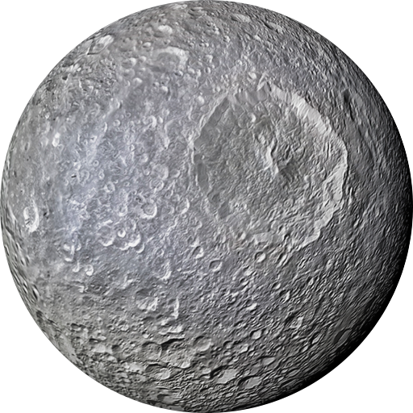

Шестая по удалённости планета
Газовый гигант - Сатурн
Сату́рн — Сатурн классифицируется как газовая планета-гигант. Сатурн назван в честь римского бога земледелия. В основном Сатурн состоит из водорода, с примесями гелия и следами воды, метана, аммиака и тяжёлых элементов. Сатурн обладает заметной системой колец, состоящей главным образом из частичек льда, меньшего количества тяжёлых элементов и пыли. Вокруг планеты обращается 146 известных на данный момент спутников.

Мимас
Ми́мас — спутник Сатурна, открытый 17 сентября 1789 года Уильямом Гершелем. Назван в честь Мимаса — одного из титанов греческой мифологии[9]. Также обозначается как Сатурн I.
Диона
Дио́на, или Сатурн IV — четвёртый по величине спутник Сатурна и четвёртый по удалённости от планеты среди семи наиболее крупных спутников последней. Имеет два коорбитальных спутника.
Рея
Ре́я — второй по величине спутник Сатурна, девятый по величине и десятый по массе спутник в Солнечной системе. Пятый по отдалённости от Сатурна среди семи его крупных спутников.
Титан
Тита́н — крупнейший спутник Сатурна, второй по величине спутник в Солнечной системе (после спутника Юпитера Ганимеда), является единственным, кроме Земли, телом в Солнечной системе.
Япет
Япе́т — третий по величине спутник Сатурна и двадцать четвёртый по расстоянию от него из известных его спутников. Самый далёкий от Сатурна среди семи его спутников.
Гиперион
Гиперио́н — естественный спутник Сатурна. Назван в честь титана. Гиперион находится в орбитальном резонансе с Титаном. Зазубренные очертания — следы столкновений.